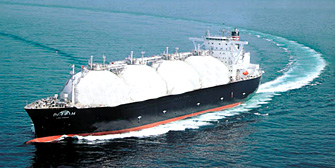
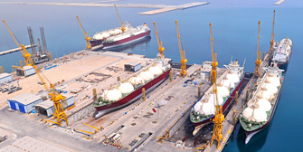
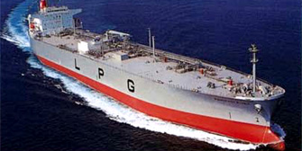
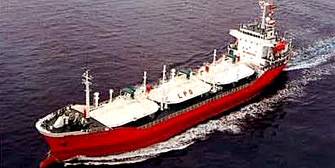
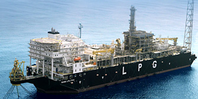

- Marine Market
- Power Plant Market
- Resource Development Market
Marine Market
Natural gas is a growing source of cleaner energy, and FUKUI safety valves play a vital role in its safe transport and storage at sea. We supply relief valves for LNG and LPG carriers, FPSO units and related offshore systems — applications where cryogenic conditions and low operating pressures demand proven engineering.
From our UK office, we support shipyards, operators and engineering partners across Europe with product selection and technical guidance.
LNG Carrier ( Liquefied Natural Gas Carrier )
Liquefied Natural Gas is produced by cooling gas down to minus 162 deg C, making it possible to get efficiency on transportation.
Products for LNG Carrier is required to meet cryogenic and extremely low pressure which is considered one of the most difficult condition for pressure safety valves.


LPG Carrier ( Liquefied Petroleum Gas Carrier )
LPG Carrier is designed to transport liquefied petroleum gas which is produced from oil fields and gas fields as an associated gas.
There are three liquefaction systems, fully pressurized type liquefying petroleum gas by pressurization, semi-refrigerated type and fully refrigerated type liquefying by refrigeration down to minus 42 deg C. FUKUI products secure an overwhelming share in each market.


FPSO
It stands for Floating Production Storage and Offloading System, which is a floating production system used for oil and gas development.
In recent years, deep-sea oil field has drawn attention and Fukui products have been adopted for storage and a top side package due to the appreciation of high reliability.

*courtesy of OPS & SBM Offshore
FSRU
It stands for Floating Storage and Re-gasification Unit.
Fukui products are adopted for FSRU which is designed to receive LNG transported by LNG Carriers at off coast near consuming area and re-gasify to deliver natural gas through pipe lines.
FSO
It stands for Floating Storage and Offloading System.
FSO is a floating unit specialized in offshore storage and offloading without production systems. It is designed to store oil or gas in a storage tank and offload to tankers.
New Environmental Management Market
NGH ( Natural Gas Hydrate )
CCS ( Carbon dioxide Capture and Storage )
Further, Fukui actively works on future generation Energy and new environmental program market such as NGH ( Natural Gas Hydrate ) and CCS ( Carbon dioxide Capture and Storage ) .